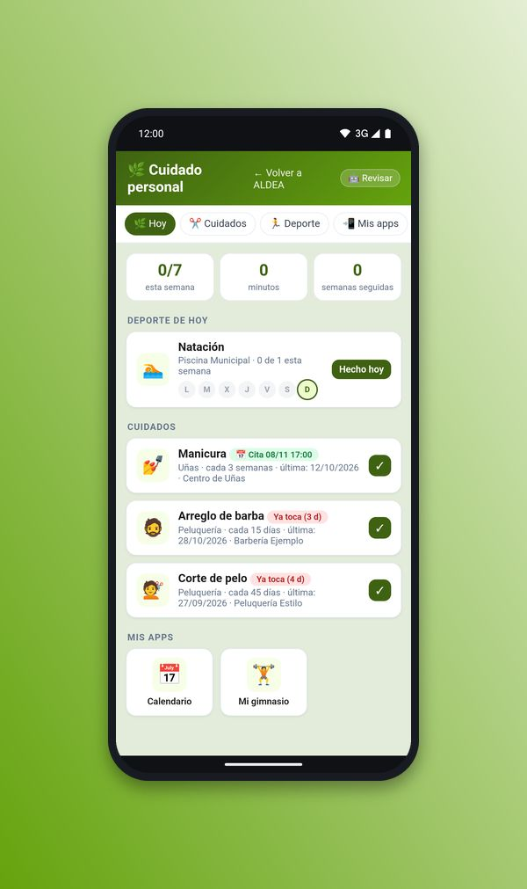
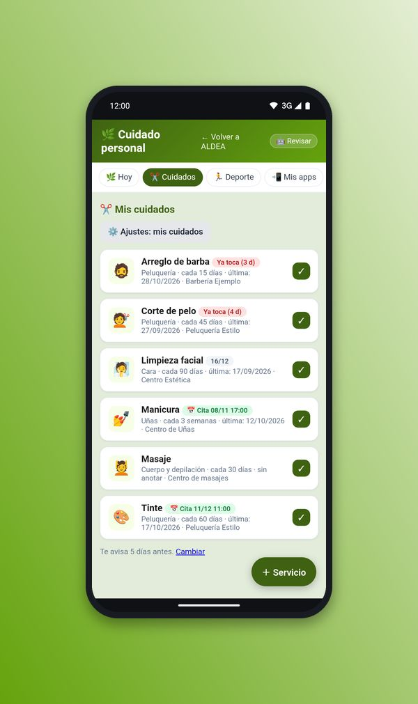
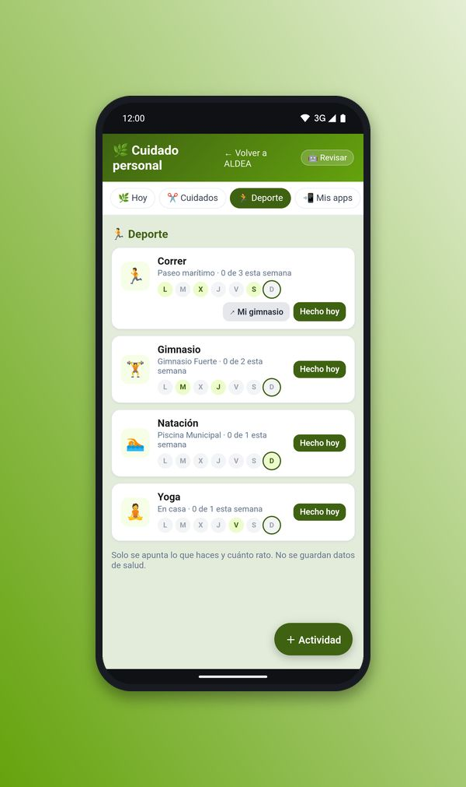
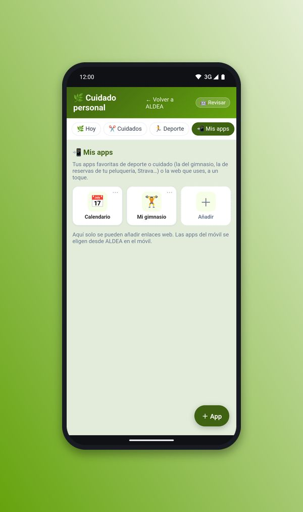

🎬 Míralo en vídeo
Menos de un minuto, con voz. Los datos que salen son de ejemplo.
📱 Así se ve




Capturas con datos de ejemplo. Toca una para verla en grande; pasan solas (se paran mientras la miras).
- ✂️ Cuidados: peluquería, uñas, estética… cada uno con «cada cuántos días». ALDEA avisa cuando toca y apuntas la cita o lo que hiciste, con su precio.
- 🏃 Deporte: tus actividades habituales con sus días, con Hecho hoy y la cuenta de la semana. No guarda pulso, peso ni otros datos de salud.
- 🌿 Hoy resume lo que toca, y 📲 Mis apps guarda accesos a tus apps o webs favoritas (la del gimnasio, la de reservas…).